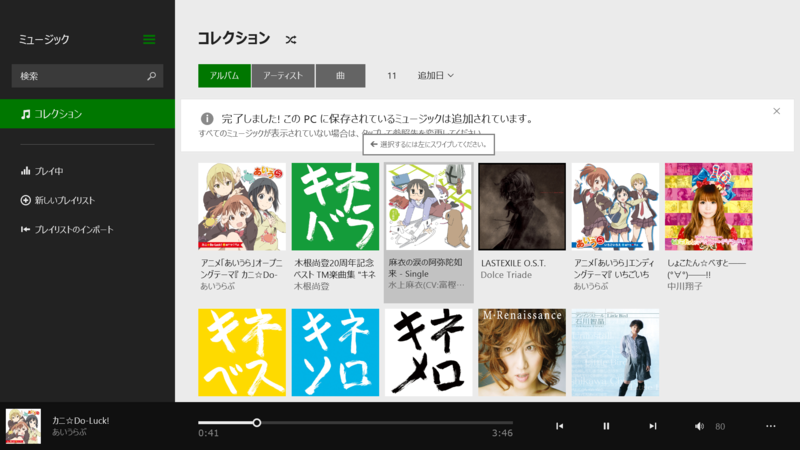

ミュージック 2.2.299.0、Windows リーディングリスト 6.3.9654.2031
公開日：

ミュージック 2.2.214.0 → 2.2.299.0

- 1 回タップするだけで、コレクション内のすべての曲をシャッフル再生
- コレクションやストアでお好きな曲をダブルクリックしてプレイ
- アーティストの詳細ページから人気の曲を再生可能 ヒット曲を見つけよう - [見つけよう] からお好きなジャンルのトップソングを見つけることができます
- アルバムや曲の購入がより簡単に。
- Microsoft ギフト カードも利用可能
- お住まいの国や地域で利用できる機能は、Xbox Music の機能リストをご確認ください。 http://support.xbox.com/apps/windows-8/xbox-on-windows-features
マイナーアップデート。このアップデート内容はメジャーバージョンアップのものかもしれない。実は左スワイプでアルバムを複数選択できるのは知らなかった。


Windows リーディングリスト 6.3.9600.20311 → 6.3.9654.2031

- このリリースでは、リストにアイテムを追加したときまたはアプリ内で、アイテムを分類する機能が追加されました。アプリからコンテンツを他のユーザーと共有する機能も提供されています。
マイナーアップデート。
この機能も今回ついたわけではなさそう。カテゴリー機能とかあったんだね。